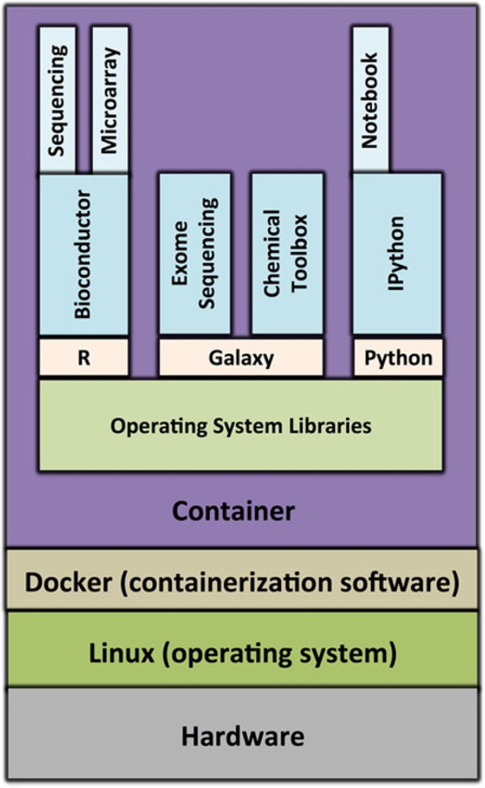
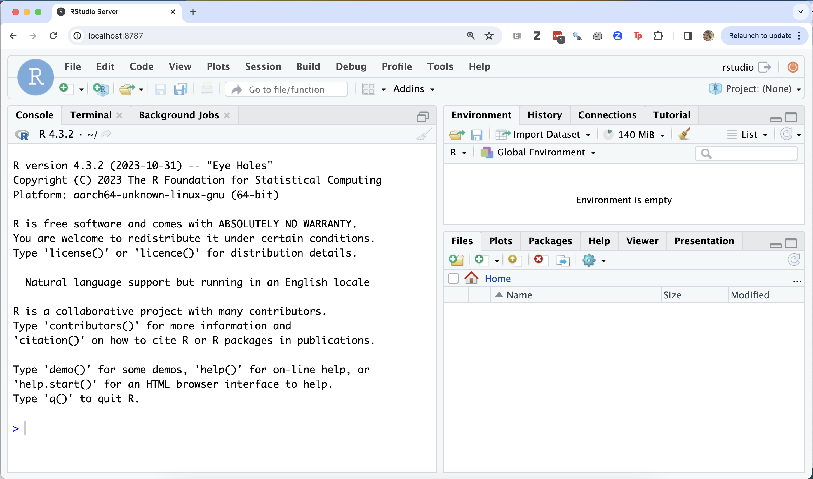
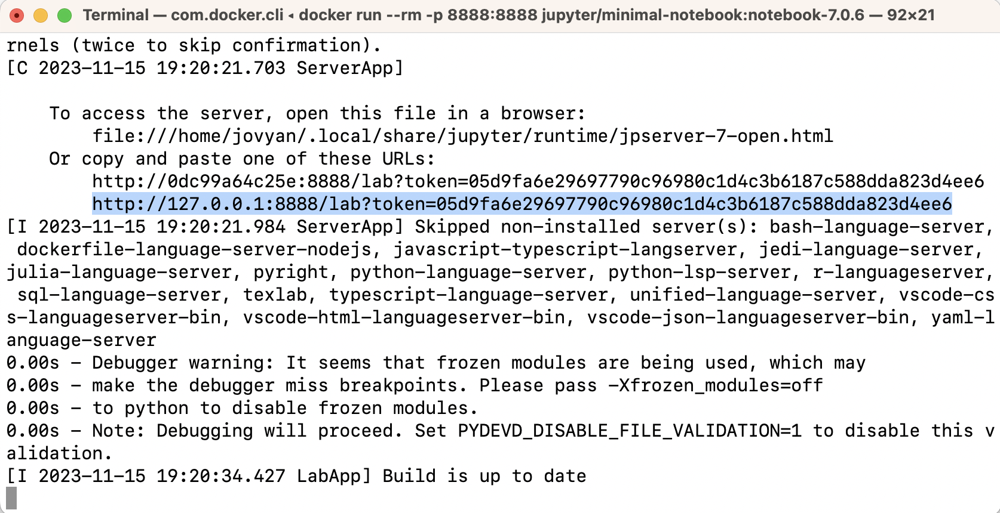
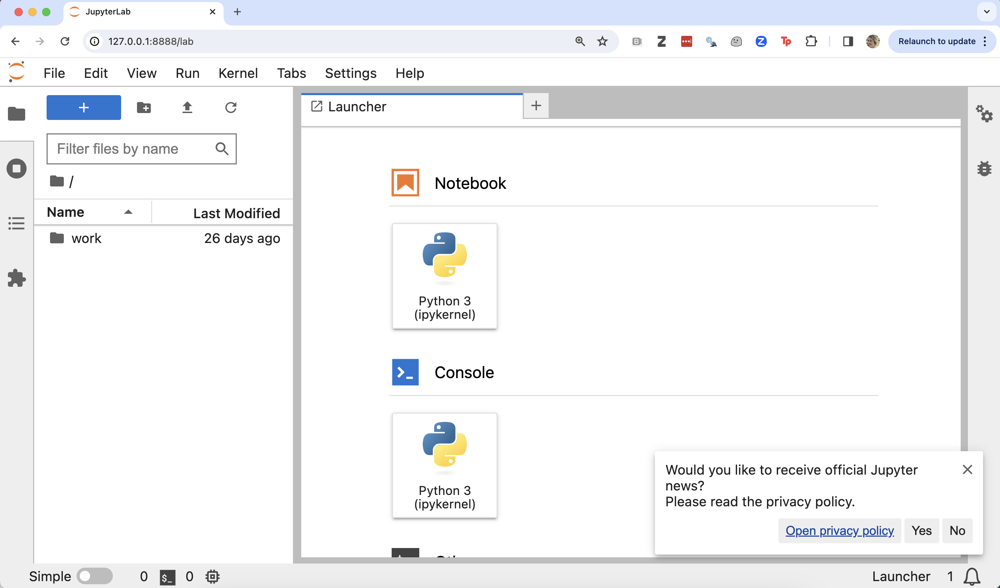
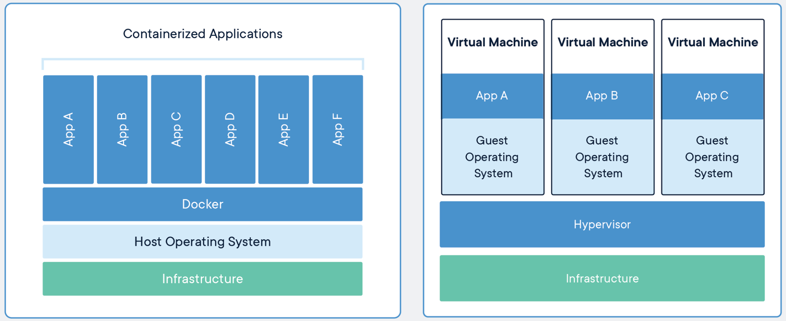
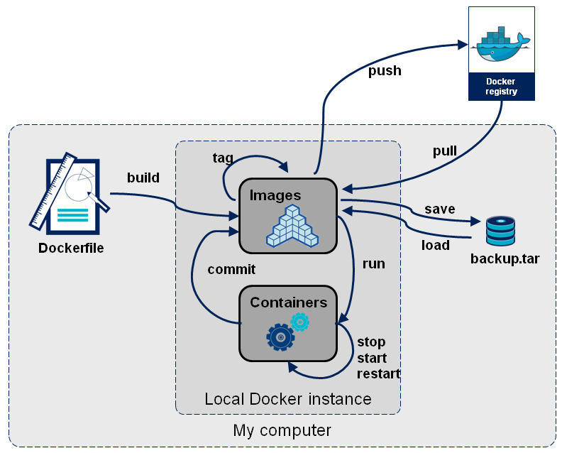
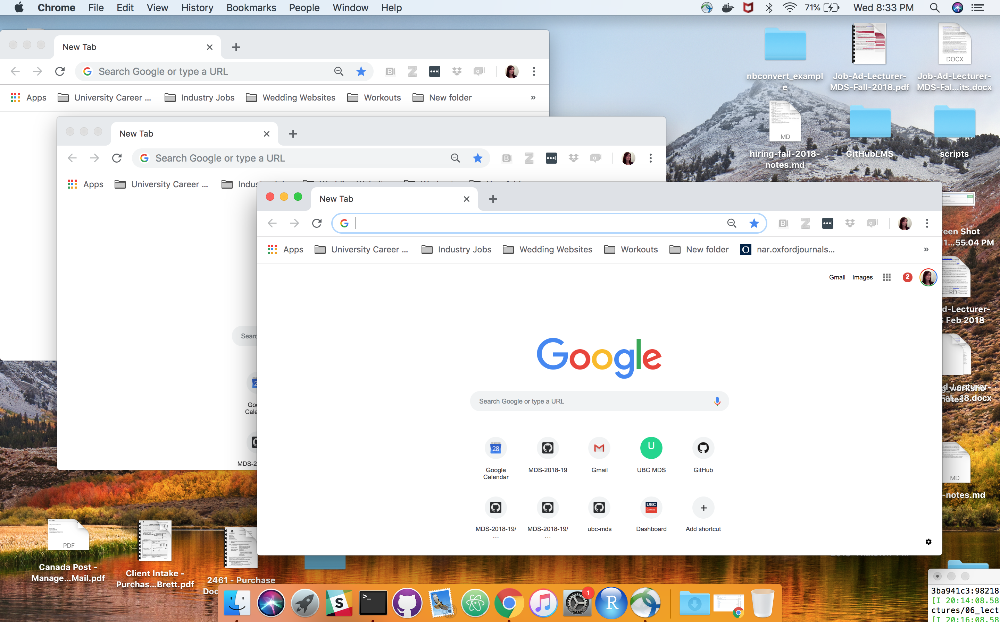

27 Introduction to containerization
Learning Objectives
- Explain what containers are, and why they can be useful for reproducible data analyses
- Discuss the advantages and limitations of containerization (e.g., Docker) in the context of reproducible data analyses
- Compare and contrast the difference between running software/scripts in a virtual environment, a virtual machine, and a container
- Evaluate, choose, and justify an appropriate environment management solution based on the data analysis project’s complexity, expected usage, and longevity
Download the images before you start
The exercises in this chapter run three container images, which together take about 13 GB of disk space (about 3 GB to download). Downloading them takes a while, so download (pull) them before you start. Start Docker first (on macOS and Windows, open Docker Desktop), then run:
Terminal
docker pull rocker/r-ver:4.3.2
docker pull rocker/rstudio:4.4.2
docker pull quay.io/jupyter/datascience-notebook:2025-03-14docker pull downloads an image from a container registry without running it. The Jupyter image is the largest of the three, at about 9 GB.
27.1 Documenting and loading dependencies
You’ve made some beautiful data analysis pipeline/project using Make, R, and/or Python. It runs on your machine, but how easily can you, or someone else, get it working on theirs? The answer usually is, it depends…
What does it depend on?
Do your
READMEand your scripts make it blatantly obvious what programming languages and packages are needed to run your data analysis pipeline/project?Do you also document the version numbers of the programming languages and packages you used? This can have big consequences when it comes to reproducibility… (e.g., the change to how
sample()draws random numbers in R 3.6.0, in 2019?)Did you document what other software (beyond the programming languages and packages used) and operating system dependencies are needed to run your data analysis pipeline/project?
Virtual environments can be tremendously helpful with #1 & #2; however, they may or may not be helpful to manage #3… Enter containerization as a possible solution!
27.2 What is a container?
Containers are another way to generate (and share!) isolated computational environments. They differ from virtual environments (which we discussed previously) in that they are even more isolated from the computer’s operating system, and they can be used to share many other types of software, applications, and operating system dependencies.
Before we can fully define containers, however, we need to define virtualization. Virtualization is a process that allows us to divide the elements of a single computer into several virtual elements. These elements can include computer hardware platforms, storage devices, computer network resources, and even operating system user spaces (e.g., graphical tools, utilities, and programming languages).
Containers virtualize operating system user spaces so that they can isolate the processes they contain, as well as control the processes’ access to computer resources (e.g., CPUs, memory, and disk space). What this means in practice is that an operating system user space can be carved up into multiple containers running the same or different processes in isolation. Below we show the schematic of a container whose virtual user space contains the:
- R programming language, the Bioconductor package manager, and two Bioconductor packages
- Galaxy workflow software and two toolboxes that can be used with it
- Python programming language, IPython interpreter, and Jupyter notebook package

Schematic of a container for genomics research. Source: https://doi.org/10.1186/s13742-016-0135-4
Running a simple container
To further illustrate what a container looks like, and feels like, we can use Docker (containerization software) to run one and explore. First we will run a Linux (Debian-flavored) container that has R installed. To run this, type:
Terminal
docker run --rm -it rocker/r-ver:4.3.2Here is what each part of the command does:
docker runstarts a new container from an image. If the image is not on your computer yet, Docker first downloads (pulls) it from a container registry.--rmdeletes the container when it stops, so that stopped containers do not pile up on your computer.-itis two flags written together.-i(--interactive) keeps the container’s input open, so that what you type reaches R.-t(--tty) connects R to a terminal, so that R runs as an interactive session. Without-t, R stops withFatal error: you must specify '--save', '--no-save' or '--vanilla'.rocker/r-ver:4.3.2is the image to run,rocker/r-verfrom Docker Hub with the tag4.3.2, which picks R 4.3.2.
R starts because the image’s Dockerfile sets CMD ["R"], the command a container runs when it starts. Building images explains CMD.
Running containers covers these flags in more detail, and Docker’s docker run reference lists them all.
When you successfully launch the container, R should have started. Check the version of R - is it the same as your computer’s version of R? Use getwd() and list.files() to explore the container’s filesystem from R. Does this look like your computer’s filesystem or something else?
Type q() to quit R and exit the container.
Compare this version of R that is running in the container to the version of R you have on your computer.
Running a container with RStudio as a web app
Next, try to use Docker to run a container that has the RStudio Server web application installed:
Terminal
docker run --rm -p 8787:8787 -e PASSWORD="apassword" rocker/rstudio:4.4.2Then open a web browser on your computer and type: http://localhost:8787
If it worked, then you should be at an RStudio Sign In page. To sign in, use the following credentials:
- username: rstudio
- password: apassword
The RStudio Server web app being run by the container should look something like this:

Type Ctrl + C in the terminal where you launched the container to quit R and RStudio and exit the container.
We can pass in multiple environment variables by using multiple -e flags. For example, we can set the password for the rstudio user with the PASSWORD environment variable, but we can also disable the login screen with the DISABLE_AUTH=true variable.
Terminal
docker run --rm -p 8787:8787 -e PASSWORD="apassword" -e DISABLE_AUTH=true rocker/rstudio:4.4.2Each container will have its own set of environment variables to control its behavior. For the rocker/rstudio project, you can find the environment variable documentation here: https://rocker-project.org/images/versioned/rstudio.html#environment-variables.
Running a container with Jupyter as a web app
Next, try to use Docker to run a container that has the Jupyter web application installed:
Terminal
docker run --rm -p 8888:8888 quay.io/jupyter/datascience-notebook:2025-03-14In the terminal, look for a URL that starts with http://127.0.0.1:8888/lab?token= (for an example, see the highlighted text in the terminal below). Copy and paste that URL into your browser.
Do not forget to copy the token= portion of the URL. If you only go to localhost:8888 or http://127.0.0.1:8888, it will ask you for the password/token.

The Jupyter web application being run by the container should look something like this:

Type Ctrl + c in the terminal where you launched the container to quit Jupyter and exit the container.
27.3 Contrasting containers with virtual machines
Virtual machines are another technology that can be used to generate (and share) isolated computational environments. Virtual machines emulate the functionality of an entire computer on another physical computer. With virtual machines, the virtualization occurs at the layer of software that sits between the computer’s hardware and the operating system(s). This software is called a hypervisor. For example, on a Mac laptop, you could install a program called Oracle VirtualBox to run a virtual machine whose operating system was Windows 8.1, as the screenshot below shows:

A screenshot of a macOS computer running a Windows virtual machine. Source: https://www.virtualbox.org/wiki/Screenshots
Below, we share an illustration that compares where virtualization happens in containers compared to virtual machines. This difference leads to containers being more lightweight and portable compared to virtual machines, and also less isolated.

Source: https://www.docker.com/resources/what-container
Key take-home: Containerization software shares the host’s operating system, whereas virtual machines have a completely separate, additional operating system. This can make containers lighter (smaller in terms of size) and more resource- and time-efficient than using a virtual machine.
27.4 Contrasting common computational environment virtualization strategies
| Feature | Virtual environment | Container | Virtual machine |
|---|---|---|---|
| Virtualization level | Application | Operating system user-space | Hardware |
| Isolation | Programming languages, packages | Programming languages, packages, other software, operating system dependencies, filesystems, networks | Programming languages, packages, other software, operating system dependencies, filesystems, networks, operating systems |
| Size | Extremely lightweight | Lightweight | Heavyweight |
27.5 Virtualization strategy advantages and disadvantages for reproducibility
Let’s collaboratively generate a list of advantages and disadvantages of each virtualization strategy in the context of reproducibility:
27.5.1 Virtual environment
A virtual environment, such as a uv or renv project, isolates the packages for one programming language.
Advantages
- Extremely small size
- Porous (less isolated) - makes it easy to pair the virtualized computational environment with files on your computer
- Specify these with a single text file
Disadvantages
- Not always possible to capture and share operating system dependencies, and other software your analysis depends upon
- Computational environment is not fully isolated, and so missed dependencies can go unnoticed
27.5.2 Containers
A container isolates an operating system user space, with its programming languages, packages and other software.
Advantages
- Somewhat lightweight in size (manageable for easy sharing - there are tools and software to facilitate this)
- Possible to capture and share operating system dependencies, and other software your analysis depends upon
- Computational environment is fully isolated, and errors will occur if dependencies are missing
- Specify these with a single text file
- Can share volumes and ports (advantage compared to virtual machines)
Disadvantages
- Possible security issues - running software on your computer that you may allow to be less isolated (i.e., mount volumes, expose ports)
- Takes some effort to share volumes and ports (disadvantage compared to virtual environments)
27.5.3 Virtual machine
A virtual machine isolates a whole computer, including its operating system.
Advantages
- High security, because these are much more isolated (filesystem, ports, etc.)
- Can share an entirely different operating system (might not be so useful in the context of reproducibility however…)
Disadvantages
- Very big in size, which can make it prohibitive to share them
- Takes great effort to share volumes and ports - which makes it hard to give access to data on your computer
27.6 Container usage workflow
Below is a schematic of a typical container usage workflow from a blog post by Arnaud Mazin. The source code for container images is stored in a file called a Dockerfile. Like a pyproject.toml or an renv.lock file, you would typically version control this with Git and store this in your GitHub repository with your analysis code. From the source Dockerfile we can build a Docker container image. This image is a binary file, from which we can run one, or more, container instances. Container instances are the computational environment in which you would run your analysis. Containers are usually ephemeral - we create them from the image when we want to run the analysis and then stop and remove/delete them after it has run. Docker images can (and should) be versioned and shared via container registries (which are akin to remote code repositories).

Source: OctoTalks
27.7 Image vs container?
Analogy: The program Chrome is like a Docker image, whereas a Chrome window is like a Docker container.

You can list the container images on your computer that you pulled using Docker via docker images. After pulling the images for this chapter, the list includes these three, and any other images you have:
Terminal
docker imagesOutput
IMAGE ID DISK USAGE CONTENT SIZE EXTRA
quay.io/jupyter/datascience-notebook:2025-03-14 bf25d19758c0 9.06GB 2.17GB
rocker/r-ver:4.3.2 4e32addfc4da 1.11GB 313MB
rocker/rstudio:4.4.2 6bfc87fb66d0 3.16GB 734MB DISK USAGE is how much space an image takes on your computer, and CONTENT SIZE is about how much was downloaded.
You can list the states of containers that have been started by Docker on your computer (and not yet removed) via docker ps -a. Here, the R container from the first exercise and the RStudio container from the second are both running:
Terminal
docker ps -aOutput
CONTAINER ID IMAGE COMMAND CREATED STATUS PORTS NAMES
adf3ea77f63f rocker/rstudio:4.4.2 "/init" 1 second ago Up Less than a second 0.0.0.0:8787->8787/tcp, [::]:8787->8787/tcp objective_hoover
adca5933388b rocker/r-ver:4.3.2 "R" 1 second ago Up Less than a second hardcore_swartz27.8 What is a container registry?
A container registry is a remote repository, or collection of repositories, used to share container images. This is similar to remote version control repositories for sharing code. Instead of code, however, it is container images that are pushed and pulled to/from there. For this course we will focus on the widely used Docker Hub container registry: https://hub.docker.com/.
However, there are many container registries that can be used, including:
In the examples above, we have used the rocker/rstudio container, which comes from Docker Hub, and the Jupyter server comes from quay.io.
Exploring container registries
Let’s visit the repositories for the two container images that we used in the exercise earlier in class:
Question: you pulled these images with docker pull before you started. What would docker run ... have done if you had not?
Answer: docker run ... will first look for images you have locally, and run those if they exist. If they do not exist, it then attempts to pull the image from the registry named in the image (Docker Hub, if the image name does not name a registry).